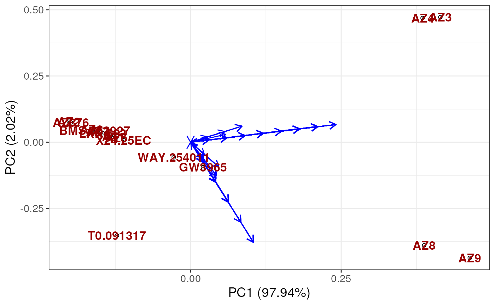

plotUCSA.RdFunction to plot the PCA results from the UnsupervisedCSA function
The PCA object from the UnsupervisedCSA function
The values in wide format from the UnsupervisedCSA function
The labels to use for the plot. Construct labels carefully using example below. The labels should be a data frame with the rownames as the states and the columns as the labels to use for the colouring of the labels.
The parameters to use for the PCA plot. Default is list(x = 1, y = 2, whichlabel = NULL). x indicates principal component to plot on x-axis, y indicates principal component to plot on y-axis. whichlabel indicates the column in the labels to use for the colouring of the labels.
The values to use for the colouring of the labels. Default is
brewer.pal(n = 8, name = "OrRd")[c(8,3)] and "grey" (for unknown labels)
A ggplot object
library("RexMS")
library(ggfortify)
# Construct labels carefully using known properties of the states (Ligands)
data("out_lxr_compound_proccessed")
data("LXRalpha_compounds")
states <- names(LXRalpha_compounds)
labels <- data.frame(ABCA1 = rep("Unknown", length(states)),
lipogenic = rep("Unknown", length(states)))
rownames(labels) <- states
labels$ABCA1[rownames(labels) %in% c("LXR.623", "AZ9", "AZ8", "AZ5")] <- "low"
labels$ABCA1[rownames(labels) %in% c("Az1", "AZ2", "AZ3", "AZ4", "AZ6",
"AZ7", "AZ876", "T0.901317", "WAY.254011",
"F1", "GW3965", "BMS.852927")] <- "high"
labels$lipogenic[rownames(labels) %in% c("AZ6", "AZ7", "AZ9",
"AZ8", "GW3965", "BMS.852927",
"LXR.623")] <- "Non-Lipogenic"
labels$lipogenic[rownames(labels) %in% c("AZ876", "AZ1",
"T0.901317", "F1", "WAY.254011")] <- "Lipogenic"
labels$ABCA1 <- factor(labels$ABCA1,
levels = c("low", "high", "Unknown"))
labels$lipogenic <- factor(labels$lipogenic,
levels = c("Non-Lipogenic", "Lipogenic", "Unknown"))
ucsa <- UnsupervisedCSA(out_lxr_compound_proccessed,
quantity = "TRE",
states = states,
whichTimepoint = 600,
pca_params = list(scale = FALSE,
center = TRUE))
plotUCSA(pca_states = ucsa$pca_states,
states_wide = ucsa$states_wide,
labels = labels)
